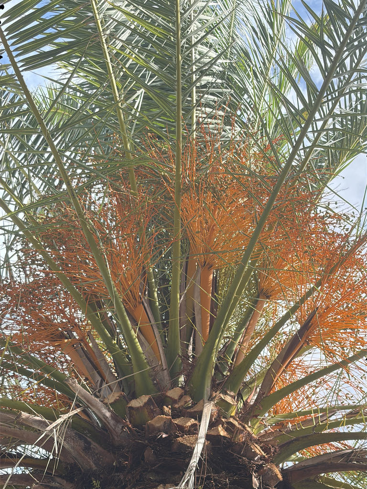

- The Canary Islands were named after dogs, not birds — from the Latin Canariae Insulae, 'Islands of the Dogs.' The canary bird was named after the islands.
- A healthy specimen carries 130 to 150 fronds. If the canopy looks thin, it's almost certainly potassium deficiency — the most common problem with this palm in Florida.
- Takes decades to reach its full architectural presence, which means every large specimen you see represents a significant investment of time.
- The diamond-patterned leaf scar trunk is one of the most ornamental bark textures of any palm in the world.
Native to the Canary Islands, an archipelago off the northwest coast of Africa. Found naturally in dry scrubland and rocky slopes across the seven main islands. Now one of the most widely planted ornamental palms in the world, lining boulevards from Barcelona to Los Angeles.
- The Canary Island Date Palm has lined the world's most famous boulevards — La Rambla in Barcelona, the promenades of Nice, and streets across California and Australia. It is one of the defining silhouettes of the Mediterranean and subtropical landscape worldwide.
- A healthy specimen should have 130 to 150 fronds in its canopy. In South Florida it produces about 50 new leaves per year. When the crown looks noticeably thin, the culprit is almost always potassium deficiency — by far the most common nutritional problem in Florida landscapes.
- The counterintuitive fix is not to remove the yellowing old fronds — those symptomatic leaves are actually still supplying the palm with what little potassium remains and removing them worsens the deficiency.
- The palm is a close relative of the commercial Date Palm (Phoenix dactylifera), which produces the dates sold in grocery stores. The Canary Island version's fruits are edible but smaller and less sweet.
- A note on the name: the Canary Islands were named from the Latin Canariae Insulae — 'Islands of the Dogs' — by Roman explorers who reported large dogs there. The small yellow songbirds were named after the islands, not the other way around.
The Canary Island Date Palm produces large clusters of small orange fruits eaten by birds, raccoons, and other wildlife. Its dense crown of arching fronds provides excellent nesting and roosting habitat — monk parakeets and other cavity-nesting birds are known to colonize large specimens. The flowers attract bees when in bloom.
The persistent skirt of old fronds on unpruned specimens shelters lizards, insects, and small birds, making mature trees disproportionately valuable as urban wildlife habitat.
Propagation by seed only. Growth rate is slow — about 6 to 12 inches per year — taking decades to reach mature height.
Orange flower stalks about 3 feet long, bearing male and female flowers on separate trees. Male pollen release can be so heavy it resembles falling snow.
Clusters of small orange to purple-black dates. Edible but not commercially valuable.
8 to 15 feet long, rigid, with up to 200 V-shaped leaflets. The basal leaflets are modified into long, sharp spines — a serious physical hazard.
2 to 3 feet in diameter. Dead leaf bases eventually rot off to leave the signature diamond-shaped leaf scar pattern — one of the most beautiful trunk textures of any palm. Often pruned into a pineapple shape near the crown.
The massive, slow-built trunk with its diamond-patterned leaf scars is the signature feature at any size. Look for the enormous arching frond crown — up to 30 feet wide at maturity. If the canopy looks sparse, check for the yellowing tips of older fronds that signal potassium deficiency.
The main hazard is physical: the basal leaf spines are sharp and dangerous. Use caution when working near the base of the crown.
The small fruits are edible but not very sweet. This is a relative of the commercial date palm, not the same species.
It isn't toxic, though the fruit pulp holds oxalate crystals that can irritate a pet's mouth if chewed.


- © Ruby Meador (CC-BY-NC), via iNaturalist
- © Randall Carter (CC-BY-NC), via iNaturalist